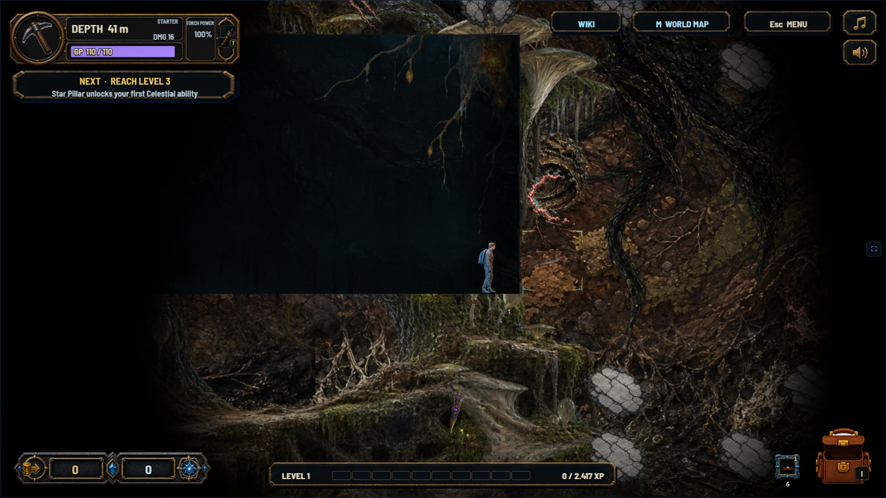
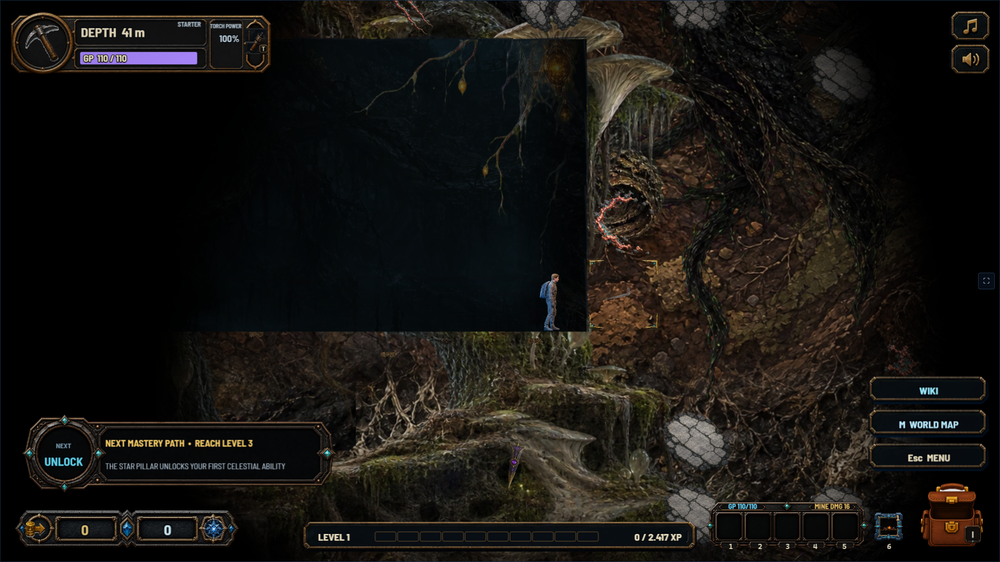

UNDERSTAR / VISUAL REVIEW / 05 SEP 2026
Everyday play, clearer.
Prioritize what stays on screen: the HUD, the mining face, and the places players return to. Drag the divider to compare actual game renders.
REAL PHASER / WEBGL RENDERSExisting artwork · 1920 × 1080
Review proposals · Production unchanged
Review proposals · Production unchanged


↔
CURRENT GAMEHUD PROPOSAL